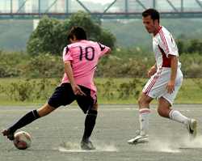
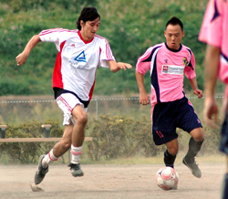
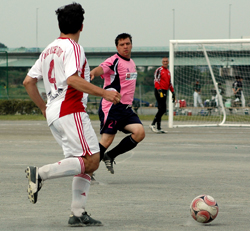

|
Sagamisansen, Saturday 26th September
The players of both teams got an insight into the minds of their wives or girlfriends last Saturday upon arrival at Ebina as they were greeted by a dusty, balding pitch in need of some face paint. TML players expect it all these days, flash cars, pop star girlfriends, onigiris and lined pitches. The Swiss literally laid down a marker by putting the Panthers to shame in the pitch marking stakes. Would this pre-match impressive form prove to be an important psychological edge in the match itself?
As with at Misato the previous week, there was a wind in the air and it took the first 5 minutes or so of sparring and getting used to the bounce before either team was able to assert any influence on the game. First blow to the Panthers as a somewhat wind assisted corner from the left flicked off an unfortunate Swiss bonce and into the net. One nil to the Panthers and hardly merited. The goal did give the Panthers more composure and allowed themselves feel a little better about their poor effort with the pre-match limestone.
The Swiss were getting a hold of midfield and were having some good possession. A few nice through balls down their left and a couple of long range shots rained in as they searched for the equalizer. The Panthers were playing on the counter which lead to Rick Zwart long throw-ins causing a few moments of anxiety in the Swiss box.
And so it ebbed and flowed in an even and well contested Div 2 match. Rouven working tirelessly down the left hand side, Mori in the middle and with the vociferous Matt Lennon at the back dictating procedures, the Panthers started to ping the ball around. It had been a hard fought first half and with half time approaching and some tiring legs, the Panthers decided to let the ball do the work. Romen Barua picking it up from Andy Vaughan at the back and a few nice interchanges across the back and through the midfield with Ma. The Panthers were building patiently until Kei Kusano seemed to tire of all this posturing and decided to have a pop. He celebrated as if he didnt mean it and we may never know, but his shot-come-cross or cross-come-shot flew over the keeper from about 30 yards out on the right wing. The ref blew for half time and the Panthers were 2 nil up.
Having toiled to close out the match against the BEFC the previous week, the Panthers were keen to avoid a repeat performance in the second half. The 3rd goal was always going to be decisive. After some good work by Mori and Kei battling down the right, his hooked looping cross fell from the sky, landing on the knee of Ben Cordier who had the time to then let it bounce and volley it over the keeper from the edge of the box. 3 nil and the Swiss looked resigned.
De-Whyte making his debut from the base was a handful for the Swiss defence and showed real strength and technique holding off defenders and conjuring up a few defence splitting passes. Top marksman Sho as all real strikers, is never happy until he scores and in typical style he really killed the game with two goals in quick succession. Using his speed to get past the last man, his finishing was to be admired, both times drawing the keeper and dinking it over him. The Swiss continued to work hard and although they knew they were beaten, kept pushing forward and went close with a free kick in the late stages. The Panthers had the luxury of being able to rest some players in the final quarter with Matty Dewey coming on and putting in a confident performance, combining well with De-Whyte.
All in all a satisfying win and the good start to the season continues for the Panthers. A commanding performance from Lennon at the back with Mori getting through some great work in midfield. Debutant De-whyte impressed but as he often does, Sho had the last word with some killer finishing. The match was played in the right spirit and will be a fixture to look out for on the reverse card later this season.
Report by Ben Cordier.
|

 |